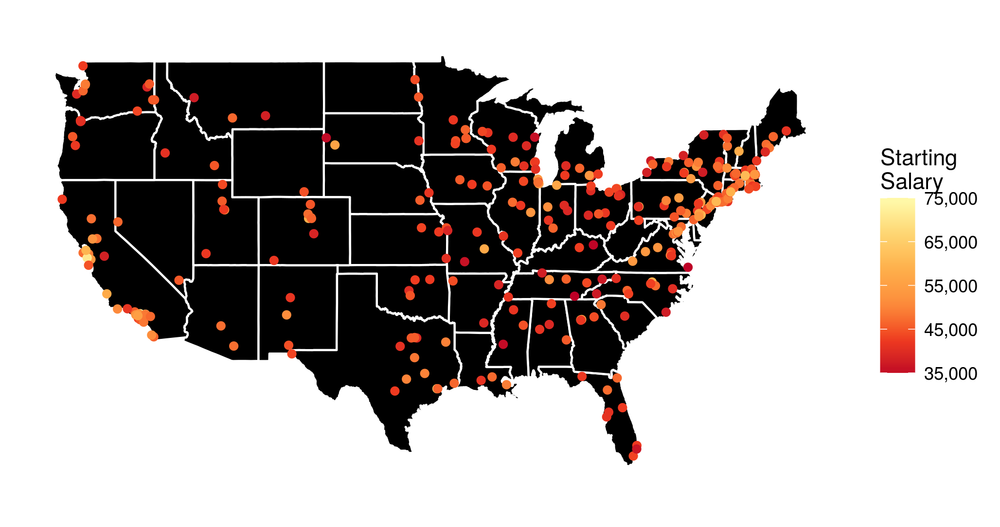

Salaries by alma mater - an interactive visualization with R and plotly

Based on an interesting dataset from the Wall Street Journal I made the above visualization of the median starting salary for US college graduates from different undergraduate institutions (I have also looked at the mid-career salaries, and the salary increase, but more on that later). However, I thought that it would be a lot more informative, if it were interactive. To the very least I wanted to be able to see the school names when hovering over or clicking on the points with the mouse.
Luckily, this kind of interactivity can be easily achieved in R with the library plotly, especially due to its excellent integration with ggplot2, which I used to produce the above figure. In the following I describe how exactly this can be done.
Before I show you the interactive visualizations, a few words on the data preprocessing, and on how the map and the points are plotted with ggplot2:
- I generally use functions from the tidyverse R packages.
- I save the data in the data frame
salaries, and transform the given amounts to proper floating point numbers, stripping the dollar signs and extra whitespaces. - The data provide school names. However, I need to find out the exact geographical coordinates of each school to put it on the map. This can be done in a very convenient way, by using the
geocodefunction from theggmapR package:school_longlat <- geocode(salaries$school) school_longlat$school <- salaries$school salaries <- left_join(salaries, school_longlat) - For the visualization I want to disregard the colleges in Alaska and Hawaii to avoid shrinking the rest of the map. The respective rows of
salariescan be easily determined with agrepsearch:grep("alaska", salaries$school, ignore.case = 1) # [1] 206 grep("hawaii", salaries$school, ignore.case = 1) # [1] 226 - A data frame containing geographical data that can be used to plot the outline of all US states can be loaded using the function
map_datafrom theggplot2package:states <- map_data("state") - And I load a yellow-orange-red palette with the function
brewer.palfrom theRColorBrewerlibrary, to use as a scale for the salary amounts:yor_col <- brewer.pal(6, "YlOrRd") - Finally the (yet non-interactive) visualization is created with
ggplot2:p <- ggplot(salaries[-c(206, 226), ]) + geom_polygon(aes(x = long, y = lat, group = group), data = states, fill = "black", color = "white") + geom_point(aes(x = lon, y = lat, color = starting, text = school)) + coord_fixed(1.3) + scale_color_gradientn(name = "Starting\nSalary", colors = rev(yor_col), labels = comma) + guides(size = FALSE) + theme_bw() + theme(axis.text = element_blank(), axis.line = element_blank(), axis.ticks = element_blank(), panel.border = element_blank(), panel.grid = element_blank(), axis.title = element_blank())
Now, entering p into the R console will generate the figure shown at the top of this post.
However, we want to…
…make it interactive
The function ggplotly immediately generates a plotly interactive visualization from a ggplot object. It’s that simple!  (Though I must admit that, more often than I would be okay with, some elements of the ggplot visualization disappear or don’t look as expected.
(Though I must admit that, more often than I would be okay with, some elements of the ggplot visualization disappear or don’t look as expected.  )
)
The function argument tooltip can be used to specify which aesthetic mappings from the ggplot call should be shown in the tooltip. So, the code
ggplotly(p, tooltip = c("text", "starting"),
width = 800, height = 500)
generates the following interactive visualization.
Now, if you want to publish a plotly visualization to https://plot.ly/, you first need to communicate your account info to the plotly R package:
Sys.setenv("plotly_username" = "??????")
Sys.setenv("plotly_api_key" = "????????????")
and after that, posting the visualization to your account at https://plot.ly/ is as simple as:
plotly_POST(filename = "Starting", sharing = "public")
More visualizations
Finally, based on the same dataset I have generated an interactive visualization of the median mid-career salaries by undergraduate alma mater (the R script is almost identical to the one described above). The resulting interactive visualization is embedded below.
Additionally, it is quite informative to look at a visualization of the salary increase from starting to mid-career.